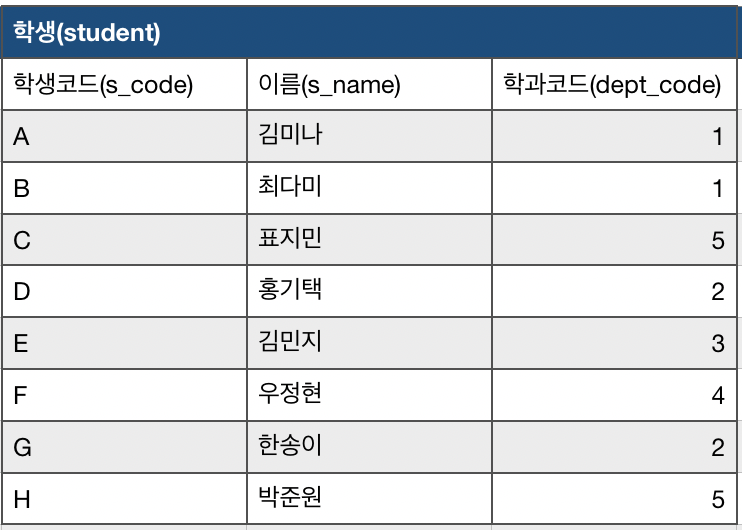
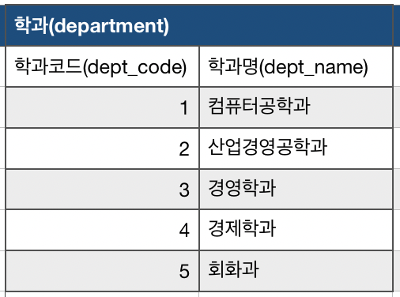

세미조인이란
세미조인은 서브 쿼리와 메인 쿼리와의 연결처리를 위한 유사 조인 방식이다. 여기서는 1:n 관계에서 1:1처럼 조회될 경우, 쿼리 튜닝을 위한 방법으로 소개하도록 하겠다.
예제
학생 테이블(student)

힉과 테이블(department)

다음의 두 테이블이 있다고 가정한다.
학생이 있는 학과의 리스트를 조회하는 예제를 살펴보자.
Inner join
1 | SELECT distinct d.dept_name |
inner join을 사용하면 학과와 학생은 1:n 관계이기 때문에 중복이 발생한다.
원하는 결과를 얻기 위해 집계함수를 사용하지 않은 group by 나 distinct 사용하여 중복을 제거해야만 한다.
또한, 위의 예제의 경우 결국 select 를 사용하여 도출하는 데이터는 학과의 학과명 뿐이다. 학생의 정보를 사용하지 않는다.
따라서
1:n 관계에서 1의 컬럼만을 사용할 경우가 바로 세미조인을 사용해야 하는 경우이다.
세미조인 종류
세미 조인으로는 in과 exists가 있다.
IN
1 |
|
EXISTS
1 |
|
장점
세미조인을 사용하게 되면 여러가지 장점이 있다.
첫번째는 동작 방식에 있다.
세미 조인이 동작을 시작하면 학생 코드 A 인 김미나 학생의 학과 코드 1을 찾기 위해 department 테이블을 뒤지기 시작한다.
department 테이블의 컴퓨터 공학과에서 출발하여 student가 가지고 있는 학과 코드를 찾게 되는데 첫번째 로우에서 바로 찾게 되기 때문에 다른 로우들은 더이상 읽지 않는다.
그리고 돌아간 후, 학생코드 B인 최다미 학생의 학과코드를 찾기 위해 준비 한다.
때문에 모든 로우를 다 읽는 inner join 보다 성능이 향상된다.
두번째는 group by나 distinct 에서 한번 더 소모되던 비용을 줄여준다는 점이다.
1:n 관계에서 inner join, outer join 쓰면 중복이 발생할 가능성이 있는데 세미조인을 사용하면 그런 문제에서 벗어날 수 있다.
끝으로..
1:n 상황에서 집계함수가 없는 group by 나 distinct 를 사용해 중복을 제거하고 있다면!
결국 사용하는 컬럼이 1에 속하는 테이블의 컬럼뿐이라면!
세미조인을 사용하여 쿼리 튜닝을 해보자.